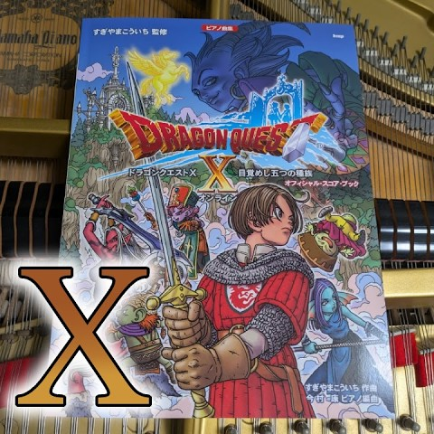

Dragon Quest X 目覚めし五つの種族
すべてのポッドキャストを表示
Open playlistDragon Quest Piano Library
Browse Dragon Quest X piano performances with song links and YouTube playlist access.

すべてのポッドキャストを表示
Open playlistSongs
Song list ordered by catalog number.
| No. | Title | Category | Difficulty |
|---|---|---|---|
| X-1 | Overture X | Opening | Not set |
| X-2 | Grace of Anlucia | Event | Not set |
| X-3 | Stirring Heart | Event | Not set |
| X-4 | Invitation to the Palace | Castle | Not set |
| X-5 | Breath of the Town | Towns & Villages | Not set |
| X-6 | Drowsy Townscape | Towns & Villages | Not set |
| X-7 | Dream My Room | Churches & Shrines | Beginner-Intermediate |
| X-8 | Villagers' Chatter | Towns & Villages | Not set |
| X-9 | Flying Skiff | Sky | Not set |
| X-10 | Looming Threat | Event | Not set |
| X-11 | Rising Heartbeat | Event | Not set |
| X-12 | Melody of Blades | Normal Battle | Not set |
| X-13 | With All One's Might | Boss Battle | Not set |
| X-14 | Heavenly World | Field | Not set |
| X-15 | Pukulipo, People of Flowers | Field | Not set |
| X-16 | Dwarves, People of Earth | Field | Not set |
| X-17 | Clang Clang Clang | Casino | Not set |
| X-18 | Beyond That Hill | Field | Not set |
| X-19 | Elegant Capital | Towns & Villages | Not set |
| X-20 | Fivefold Magic Tower | Tower | Not set |
| X-21 | Wedi, People of Water | Field | Not set |
| X-22 | Elves, People of Wind | Field | Not set |
| X-23 | Ogres, People of Flame | Field | Not set |
| X-24 | Wandering in Darkness | Dungeon | Not set |
| X-25 | Labyrinth of the End | Dungeon | Not set |
| X-26 | One Who Comes from the World of Death | Boss Battle | Not set |
| X-27 | Invitation to Death | Boss Battle | Not set |
| X-28 | King of the Underworld | Boss Battle | Not set |
| X-29 | Toward a Greater Future | Ending | Not set |
| X-30 | The Awakened Five Tribes | Ending | Not set |
Related
Cross-link into field, battle, and medley pages.